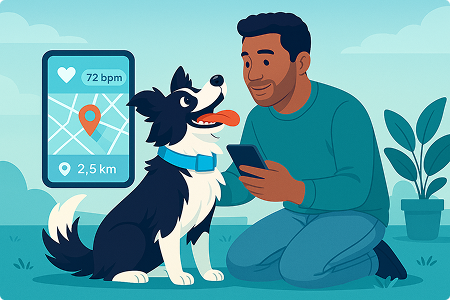

Mantén a tu mascota segura con PetTracker
Monitorea su salud y ubicación en tiempo real desde tu teléfono.
Descarga la aplicación ahora
¿Por qué elegir PetTracker?
Descubre los beneficios que hacen de PetTracker el mejor compañero para tu mascota.
-
Monitoreo en tiempo real
Supervisa los signos vitales de tu mascota desde cualquier lugar.
-
Rastreo GPS preciso
Ubica a tu mascota al instante, sin importar dónde estés.
-
Alertas inteligentes
Recibe notificaciones automáticas ante anomalías de salud o comportamiento.
-
Reportes mensuales de salud
Obtén información detallada para cuidar mejor a tu mascota.
-
Tranquilidad para ti
PetTracker te brinda la confianza de saber que tu mejor amigo está seguro.
Acerca de PetTracker
En PetTracker sabemos cuánto significa tu mascota para ti. Por eso creamos un collar inteligente
que te permite monitorear su salud y ubicación en tiempo real desde tu teléfono.
Con tecnología avanzada, PetTracker registra signos vitales, te alerta ante cualquier problema
y te ayuda a localizar a tu amigo peludo en segundos. Más que un dispositivo, PetTracker es
tranquilidad para los amantes de los animales.
Nuestra misión es simple: ayudarte a cuidar a tu mejor amigo como se merece, fortaleciendo el
vínculo especial que los une.

Cómo funciona PetTracker
Sigue estos sencillos pasos para comenzar a cuidar a tu mascota como un profesional.
Coloca el collar
Coloca el collar PetTracker en tu mascota de forma segura y cómoda.
Descarga la app
Instala la aplicación PetTracker en tu teléfono desde PlayStore o App Store.
Vincula el dispositivo
Conecta el collar con la app en segundos y comienza el monitoreo.
Monitorea y recibe alertas
Consulta su salud, ubicación y recibe notificaciones en tiempo real.
Accede a reportes y soporte
Visualiza reportes detallados y utiliza el chat de soporte ante cualquier duda.
Elige tu plan
Selecciona el plan PetTracker perfecto para ti y tu mascota:
Plan Básico
Costo del dispositivo
Pago único
Plan Premium
Costo del dispositivo
Pago único